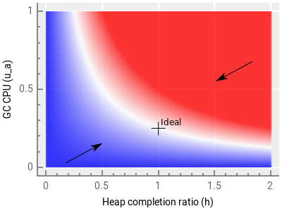
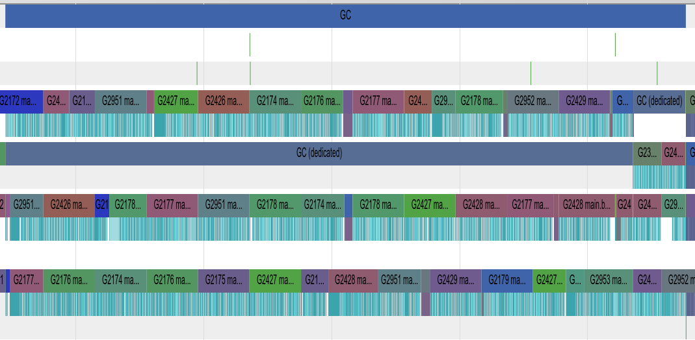
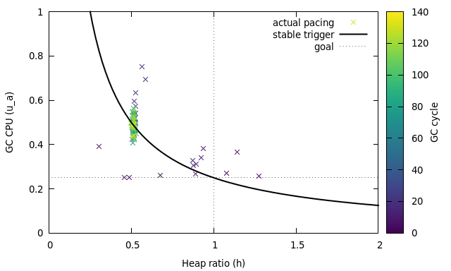
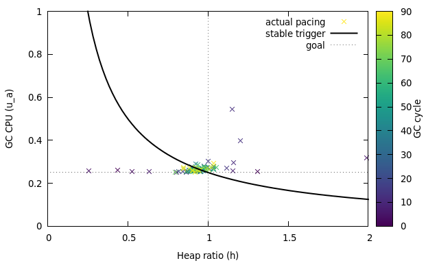

Proposal: Separate soft and hard heap size goal¶
Author(s): Austin Clements
Inspired by discussion with Rick Hudson and Rhys Hiltner
Last updated: 2017-10-31
Discussion at https://golang.org/issue/14951.
Background¶
The GC pacer is responsible for determining when to start a GC cycle and how much back-pressure to put on allocation to prevent exceeding the goal heap size. It aims to balance two goals:
Complete marking before the allocated heap exceeds the GOGC-based goal heap size.
Minimize GC CPU consumed beyond the 25% reservation.
In order to satisfy the first goal, the pacer forces the mutator to assist with marking if it is allocating too quickly. These mark assists are what cause GC CPU to exceed the 25%, since the scheduler dedicates 25% to background marking without assists. Hence, to satisfy the second goal, the pacer’s trigger controller sets the GC trigger heap size with the goal of starting GC early enough that no assists are necessary. In addition to reducing GC CPU overhead, minimizing assists also reduces the per-goroutine latency variance caused by assists.
In practice, however, the trigger controller does not achieve the goal of minimizing mark assists because it stabilizes on the wrong steady state. This document explains what happens and why and then proposes a solution.
For a detailed description of the pacer, see the pacer design document. This document follows the nomenclature set out in the original design, so it may be useful to review the original design document first.
Problem¶
The trigger controller is a simple proportional feedback system based on two measurements that directly parallel the pacer’s two goals:
The actual heap growth ha at which marking terminates, as a fraction of the heap goal size. Specifically, it uses the overshoot ratio h = (ha − hT)/(hg−hT), which is how far between the trigger hT and the goal hg the heap was at completion. Ideally, the pacer would achieve h = 1.
The actual GC CPU consumed ua as a fraction of the total CPU available. Here, the goal is fixed at ug = 0.25.
Using these, the trigger controller computes the error in the trigger and adjusts the trigger based on this error for the next GC cycle. Specifically, the error term is
However, e(n) = 0 not only in the desired case of h = 1, ua = ug, but in any state where h = ug/ua. As a result, the trigger controller can stabilize in a state that undershoots the heap goal and overshoots the CPU goal. We can see this in the following plot of e(n), which shows positive error in blue, negative error in red, and zero error in white:

Coupled with how GC paces assists, this is exactly what happens when the heap size is stable. To satisfy the heap growth constraint, assist pacing conservatively assumes that the entire heap is live. However, with a GOGC of 100, only half of the heap is live in steady state. As a result, marking terminates when the allocated heap is only half way between the trigger and the goal, i.e., at h = 0.5 (more generally, at h = 100/(100+GOGC)). This causes the trigger controller to stabilize at ua = 0.5, or 50% GC CPU usage, rather than ua = 0.25. This chronic heap undershoot leads to chronic CPU overshoot.
Example¶
The garbage benchmark demonstrates this problem nicely when run as
garbage -benchmem 512 -benchtime 30s.
Even once the benchmark has entered steady state, we can see a
significant amount of time spent in mark assists (the narrow cyan
regions on every other row):

Using GODEBUG=gcpacertrace=1, we can
plot
the exact evolution of the pacing parameters:

The thick black line shows the balance of heap growth and GC CPU at which the trigger error is 0. The crosses show the actual values of these two at the end of each GC cycle as the benchmark runs. During warmup, the pacer is still adjusting to the rapidly changing heap. However, once the heap enters steady state, GC reliably finishes at 50% of the target heap growth, which causes the pacer to dutifully stabilize on 50% GC CPU usage, rather than the desired 25%, just as predicted above.
Proposed solution¶
I propose separating the heap goal into a soft goal, hg, and a hard goal, hg’, and setting the assist pacing such the allocated heap size reaches the soft goal in expected steady-state (no live heap growth), but does not exceed the hard goal even in the worst case (the entire heap is reachable). The trigger controller would use the soft goal to compute the trigger error, so it would be stable in the steady state.
Currently the work estimate used to compute the assist ratio is simply We = s, where s is the bytes of scannable heap (that is, the total allocated heap size excluding no-scan tails of objects). This worst-case estimate is what leads to over-assisting and undershooting the heap goal in steady state.
Instead, between the trigger and the soft goal, I propose using an adjusted work estimate We = s/(1+hg). In the steady state, this would cause GC to complete when the allocated heap was roughly the soft heap goal, which should cause the trigger controller to stabilize on 25% CPU usage.
If allocation exceeds the soft goal, the pacer would switch to the worst-case work estimate We = s and aim for the hard goal with the new work estimate.
This leaves the question of how to set the soft and hard goals. I propose setting the soft goal the way we currently set the overall heap goal: hg = GOGC/100, and setting the hard goal to allow at most 5% extra heap growth: hg’ = 1.05hg. The consequence of this is that we would reach the GOGC-based goal in the steady state. In a heap growth state, this would allow heap allocation to overshoot the GOGC-based goal slightly, but this is acceptable (maybe even desirable) during heap growth. This also has the advantage of allowing GC to run less frequently by targeting the heap goal better, thus consuming less total CPU for GC. It will, however, generally increase heap sizes by more accurately targeting the intended meaning of GOGC.
With this change, the pacer does a significantly better job of achieving its goal on the garbage benchmark:

As before, the first few cycles have high variance from the goal because the heap is growing rapidly, so the pacer cannot find a stable point. However, it then quickly converges near the optimal point of reaching the soft heap goal at 25% GC CPU usage.
Interestingly, while most of the variance in the original design was around GC CPU usage, that variance has been traded to the heap ratio in this new design. This is because the scheduler does not allow GC CPU usage to drop below 25%. Hence, the controller saturates and the inherent variance shifts to the less constrained dimension.
To address this, I propose making one further change: dedicate only 20% of the CPU to background marking, with the expectation that 5% will be used for mark assists in the steady state. This keeps the controller out of saturation and gives it some “wiggle room”, while still minimizing time spent in mark assists The result is very little variance from the goal in either dimension in the steady state:
Evaluation¶
To evaluate this change, we use the go1 and x/benchmarks suites. All results are based on CL 59970 (PS2) and CL 59971 (PS3). Raw results from the go1 benchmarks can be viewed here and the x/benchmarks can be viewed here.
Throughput¶
The go1 benchmarks show little effect in throughput, with a geomean slowdown of 0.16% and little variance. The x/benchmarks likewise show relatively little slowdown, except for the garbage benchmark with a 64MB live heap, which slowed down by 4.27%. This slowdown is almost entirely explained by additional time spent in the write barrier, since the mark phase is now enabled longer. It’s likely this can be mitigated by optimizing the write barrier.
Alternatives and additional solutions¶
Adjust error curve. Rather than adjusting the heap goal and work estimate, an alternate approach would be to adjust the zero error curve to account for the expected steady-state heap growth. For example, the modified error term
results in zero error when h = ug/(ua(1+hg)), which crosses ua = ug at h = 1/(1+hg), which is exactly the expected heap growth in steady state.
This mirrors the adjusted heap goal approach, but does so by starting GC earlier rather than allowing it to finish later. This is a simpler change, but has some disadvantages. It will cause GC to run more frequently rather than less, so it will consume more total CPU. It also interacts poorly with large GOGC by causing GC to finish so early in the steady-state that it may largely defeat the purpose of large GOGC. Unlike with the proposed heap goal approach, there’s no clear parallel to the hard heap goal to address the problem with large GOGC in the adjusted error curve approach.
Bound assist ratio. Significant latency issues from assists may happen primarily when the assist ratio is high. High assist ratios create a large gap between the performance of allocation when assisting versus when not assisting. However, the assist ratio can be estimated as soon as the trigger and goal are set for the next GC cycle. We could set the trigger earlier if this results in an assist ratio high enough to have a significant impact on allocation performance.
Accounting for floating garbage. GOGC’s effect is defined in terms of the “live heap size,” but concurrent garbage collectors never truly know the live heap size because of floating garbage. A major source of floating garbage in Go is allocations that happen while GC is active, since all such allocations are retained by that cycle. These pre-marked allocations increase the runtime’s estimate of the live heap size (in a way that’s dependent on the trigger, no less), which in turn increases the GOGC-based goal, which leads to larger heaps.
We could account for this effect by using the fraction of the heap that is live as an estimate of how much of the pre-marked memory is actually live. This leads to the following estimate of the live heap: , where m is the bytes of marked heap and HT and Ha are the absolute trigger and actual heap size at completion, respectively.
This estimate is based on the known post-marked live heap (marked heap that was allocated before GC started), . From this we can estimate that the overall fraction of the heap that is live is . This yields an estimate of how much of the pre-marked heap is live: . The live heap estimate is then simply the sum of the post-marked live heap and the pre-marked live heap estimate.
Use work credit as a signal. Above, we suggested decreasing the background mark worker CPU to 20% in order to avoid saturating the trigger controller in the regime where there are no assists. Alternatively, we could use work credit as a signal in this regime. If GC terminates with a significant amount of remaining work credit, that means marking significantly outpaced allocation, and the next GC cycle can trigger later.
TODO: Think more about this. How do we balance withdrawals versus the final balance? How does this relate to the heap completion size? What would the exact error formula be?
Accounting for idle. Currently, the trigger controller simply ignores idle worker CPU usage when computing the trigger error because changing the trigger won’t directly affect idle CPU. However, idle time marking does affect the heap completion ratio, and because it contributes to the work credit, it also reduces assists. As a result, the trigger becomes dependent on idle marking anyway, which can lead to unstable trigger behavior: if the application has a period of high idle time, GC will repeatedly finish early and the trigger will be set very close to the goal. If the application then switches to having low idle time, GC will trigger too late and assists will be forced to make up for the work that idle marking was previously performing. Since idle time can be highly variable and unpredictable in real applications, this leads to bad GC behavior.
To address this, the trigger controller could account for idle utilization by scaling the heap completion ratio to estimate what it would have been without help from idle marking. This would be like assuming the next cycle won’t have any idle time.